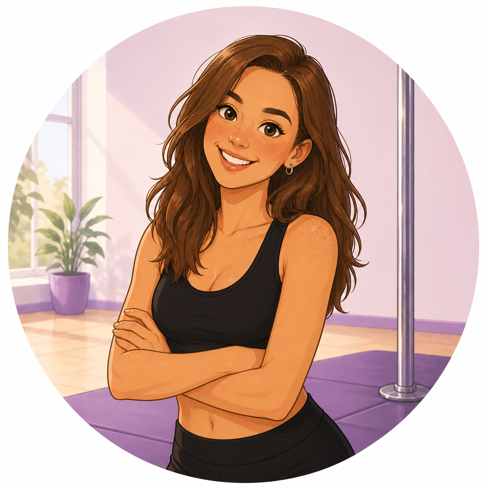
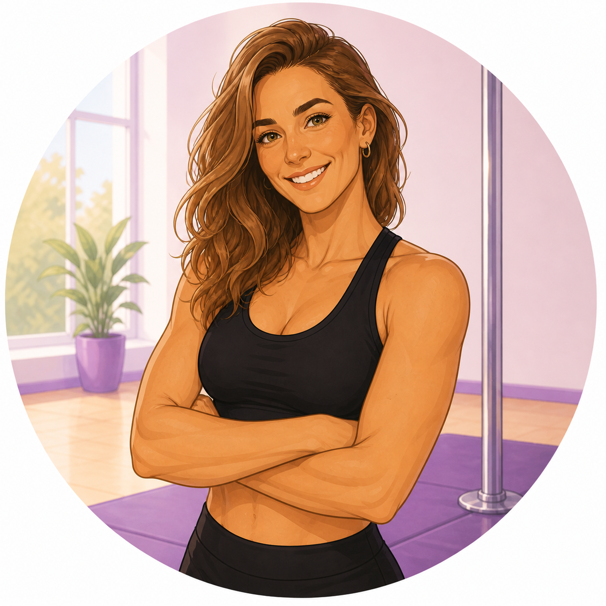
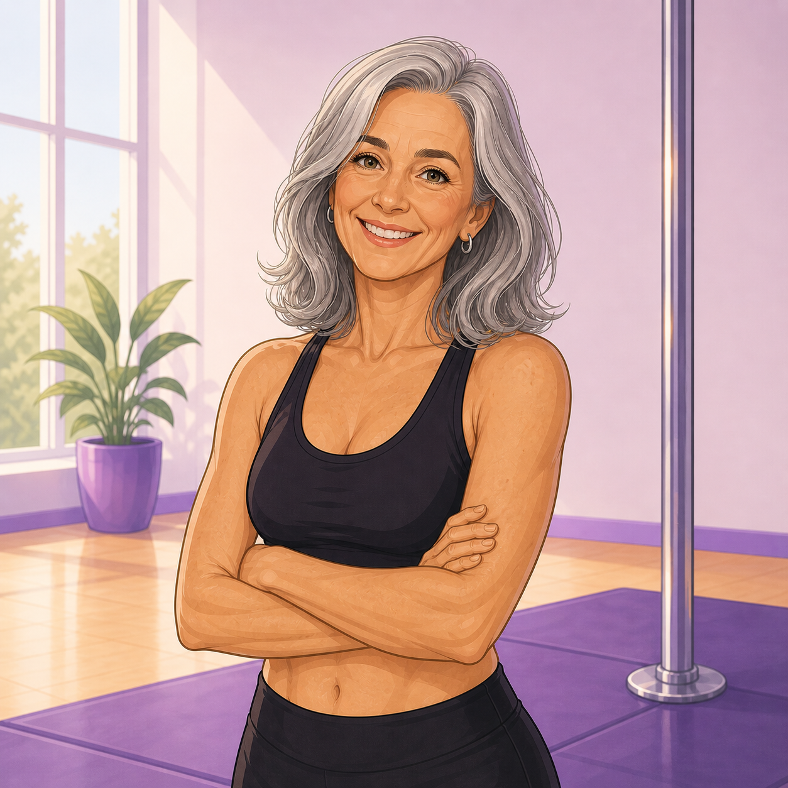
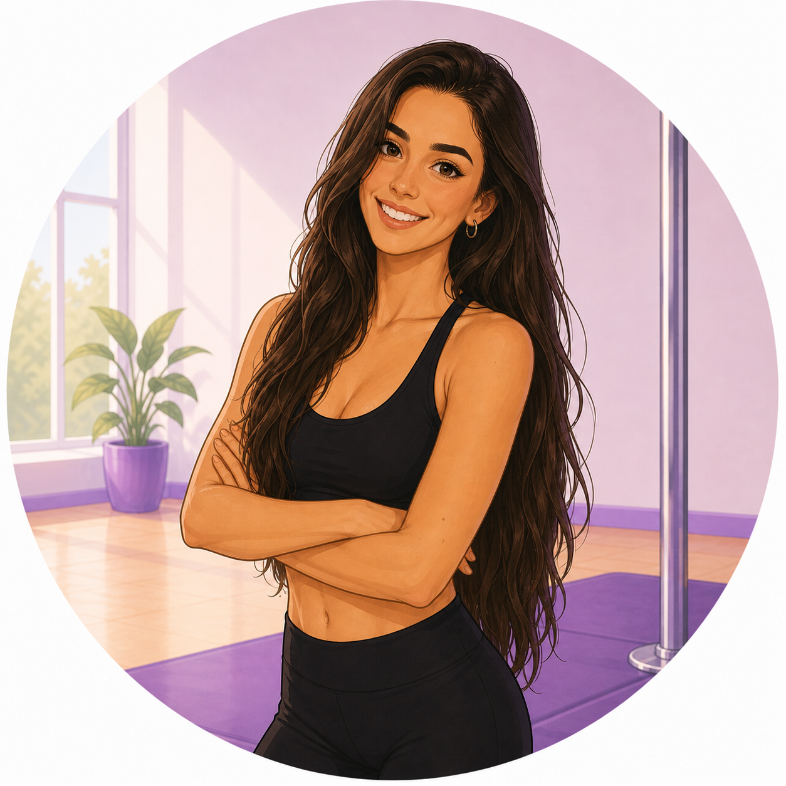
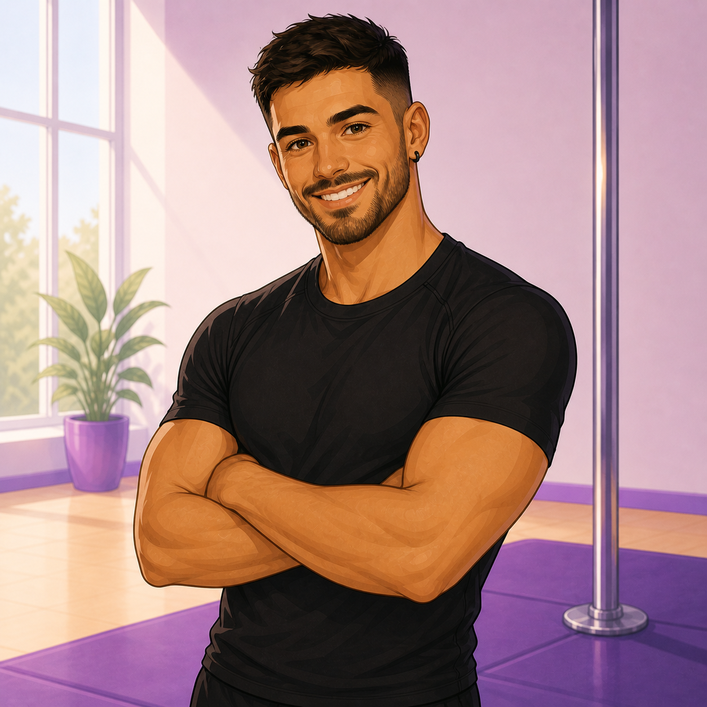

De un sueño a una realidad: así nació Oh My Pole
Un espacio creado para entrenar, aprender, superarse y disfrutar del proceso, tanto si empiezas desde cero como si buscas perfeccionar tu técnica. Somos un equipo de profesionales comprometidos con acompañarte en cada paso, con una enseñanza segura, progresiva y respetuosa con tu cuerpo. Aquí entrenas sin presión, sin comparaciones y con un ambiente que te impulsa a crecer.
Contamos con dos salas de pole dance totalmente equipadas, y un área dedicada a las disciplinas aéreas: telas y aro. También ofrecemos actividades complementarias como pole libre, flexibilidad, pole kids, pole exotic y talleres de tecnificación.
Situado en la zona centro de Fuenlabrada, en Madrid, nuestra escuela dispone de una sala de Pole Dance equipada con 6 barras de 3,5m marca X-Pole, y otra con 6 barras marca Lupit de 4m; y la sala de aéreos, equipada con 4 telas aéreas a 4,5m de altura y 4 aros. Contamos con colchonetas para la seguridad de los alumnos, y diferentes productos como magnesios y resinas para mejorar el agarre en barra. Además de un sistema 100% automatizado para que puedas reservar tus clases desde cualquier lugar, a cualquier hora y con flexibilidad de horarios.
Nuestra academia
En Oh My Pole, nos dedicamos a ayudarte a explorar, desarrollar y potenciar todo tu talento. Fomentamos un espacio acogedor donde el amor, el respeto, la humildad y la amistad son nuestros valores base, haciendo que personas de todas las edades y estilos se sientan bienvenidas y apoyadas en su aventura en el Pole Dance.
Sea cual sea tu nivel, esta academia es para ti. Nuestro método está diseñado para que puedas comenzar desde cero, cimentando tu aprendizaje con una buena base y respetando tus ritmos y tu cuerpo durante el proceso. Si ya haces Pole Dance, nuestra técnica de aprendizaje te llevará a perfeccionar tus habilidades. No importa tu nivel ni forma física, ¡tenemos la clase perfecta para ti!
Nuestras profes
Nuestro equipo de profesoras, el corazón de Oh my Pole. Detrás de cada clase, de cada logro y de cada avance, hay un equipo que comparte la misma pasión por el pole y las disciplinas aéreas. Nuestras profes no solo enseñan técnica: acompañan, motivan y crean un espacio seguro donde cada alumna puede descubrir de lo que es capaz. Con experiencia, dedicación y mucho cariño por este deporte, están aquí para guiarte en cada paso de tu evolución.

Ainhoa
Directora de Oh my Pole y profesora de pole dance y flexibilidad

María
Profesora de pole dance

Rubria
Profesora de pole dance y flexibilidad

Sara
Profesora de pole exotic
